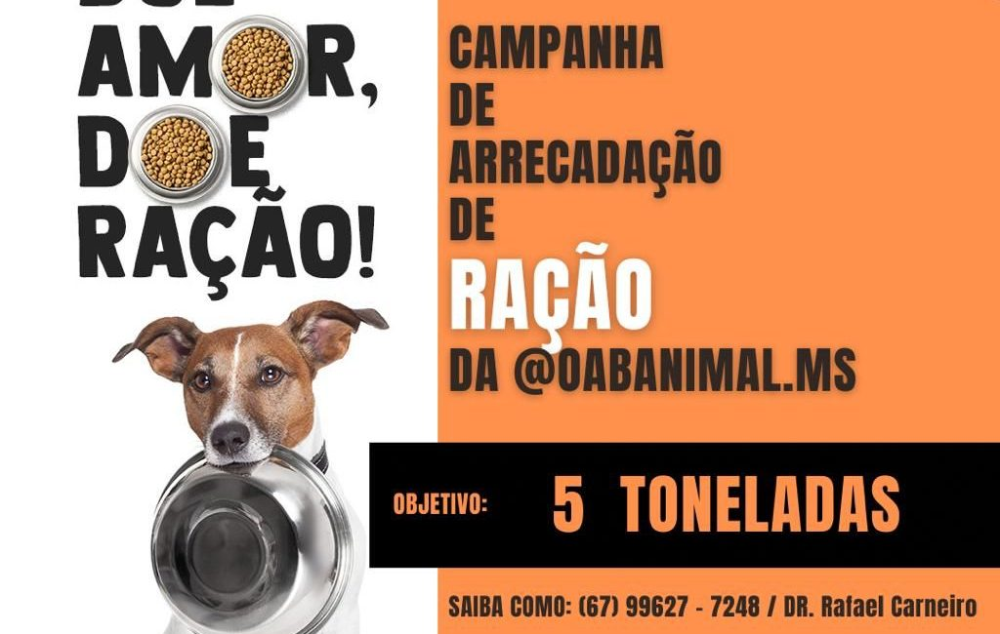
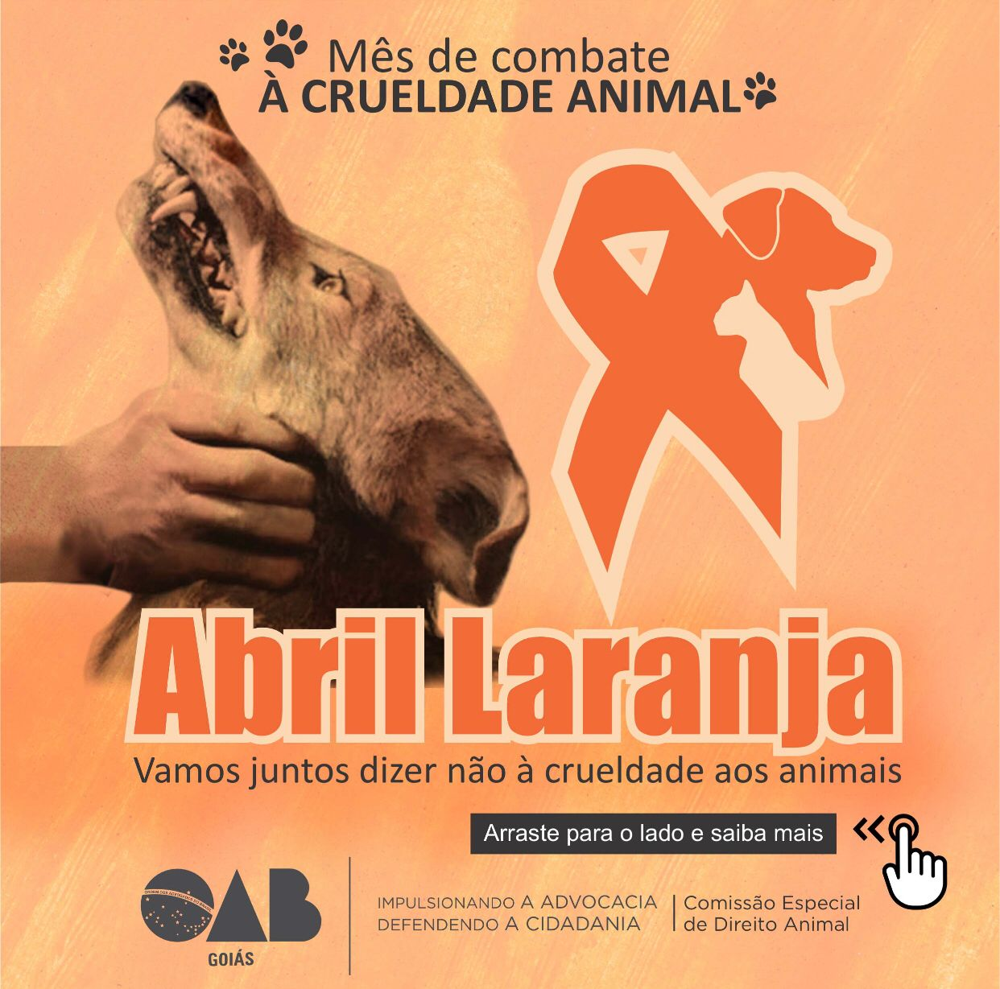

|
 |
 |

|
Organizações Não Governamentais de proteção animal
|
 |
 |
|
ONGs (Organizações Não Governamentais) são instituições sem fins lucrativos que trabalham para causas sociais, ambientais ou de proteção animal. Elas desempenham um papel crucial na defesa dos direitos dos animais e na promoção do bem-estar animal.
As ONGs de proteção animal realizam atividades como resgate de animais em situação de risco, campanhas de conscientização, adoção responsável e advocacy para mudanças legislativas. Elas dependem do apoio da comunidade para continuar seu trabalho vital.
| Nome | Missão |
|---|---|
| Ampara Animal | Resgate e proteção de animais em situação de risco |
| Proteção Animal Brasil | Combate aos maus-tratos e conscientização |
| World Animal Protection | Defesa global dos direitos dos animais |

| Logo do Abril Laranja com silhuetas de animais e mensagem de prevenção à crueldade animal. |
As ONGs de proteção animal são essenciais para a defesa dos direitos dos animais e a promoção do bem-estar animal. Elas dependem do apoio da comunidade para continuar seu trabalho vital. Ao ajudar uma ONG, você está contribuindo para um mundo mais justo e compassivo para os animais.